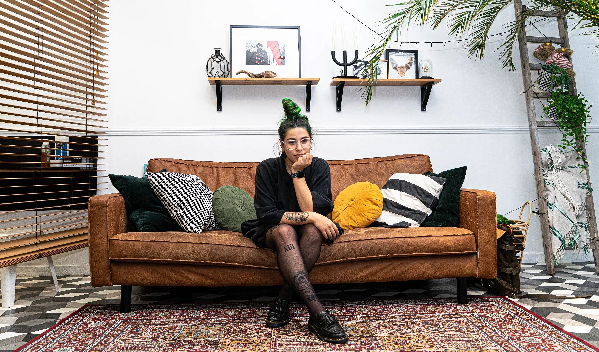
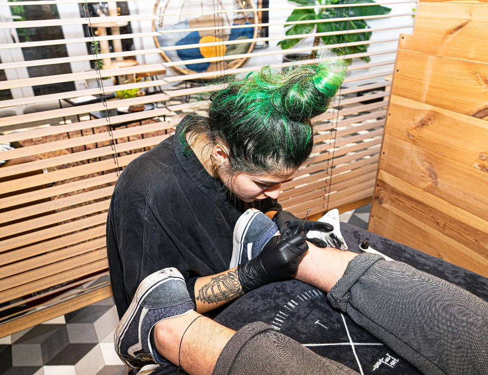
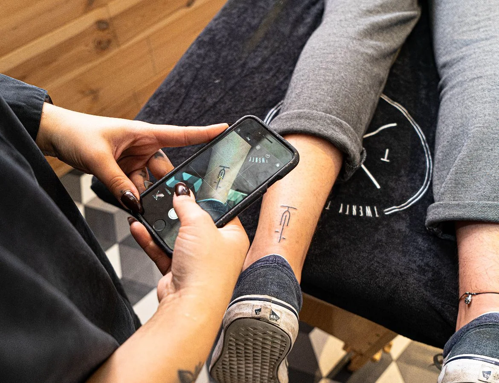
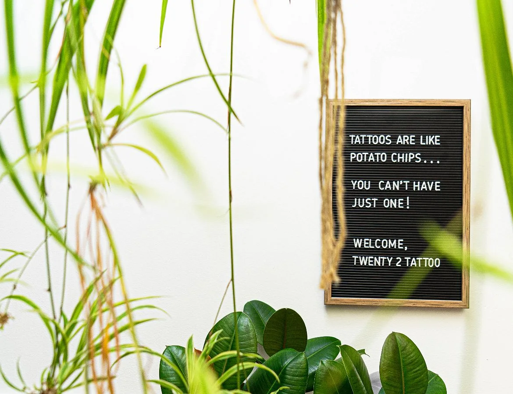
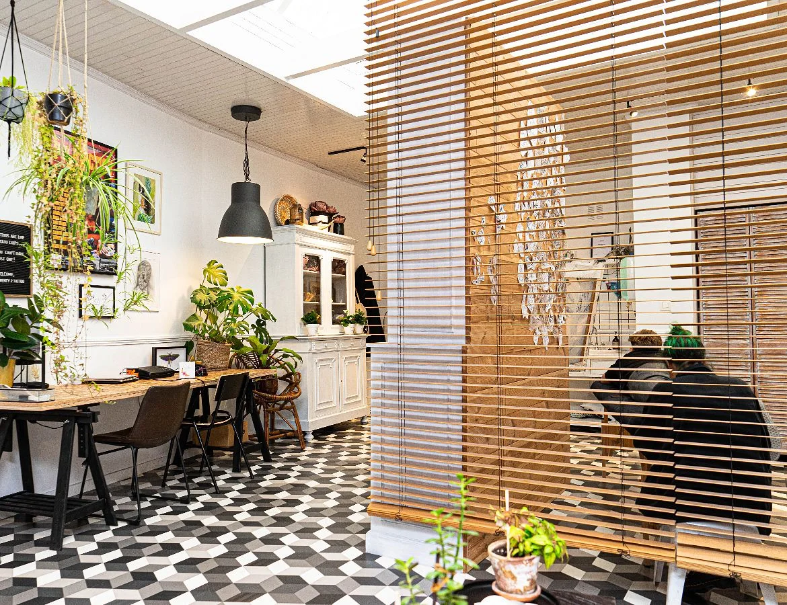
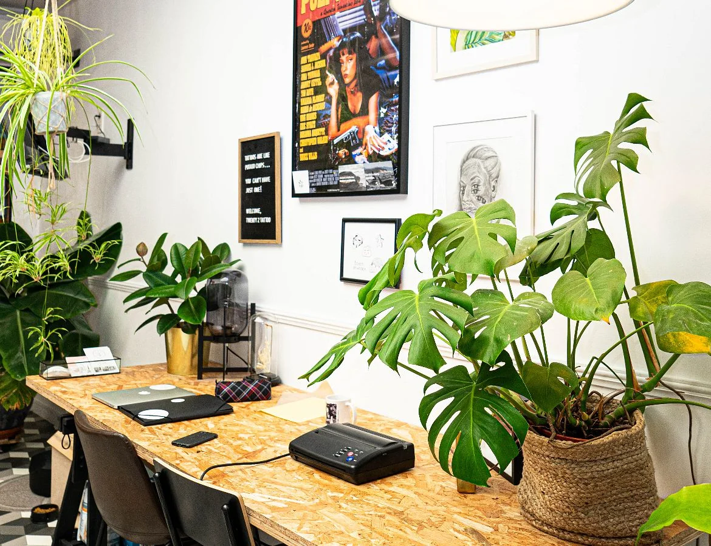

Eén is nooit genoeg.
Bij Elisa begint elke tattoo met een gesprek. Daarna een ontwerp dat bij jou past, en pas dan de naald.

Eerst praten,
dan prikken.
Geen haast, geen lopende band. Elisa neemt de tijd voor jou en voor je idee, van de eerste schets tot de laatste lijn.

De bespreking
Je vertelt wat je in gedachten hebt, met een foto, een woord of gewoon een gevoel. Samen kijk je naar plaats en grootte.
Kost nietsHet ontwerp
Elisa werkt je idee uit tot een ontwerp, op maat van jou en van de plek op je lichaam.
De plaatsing
Rustig, in een studio vol planten. Met een babbel erbij, en voor je het weet sta je weer buiten.

Fijne lijnen, kleine symbolen of iets groters met veel detail. Je eerste of je vijfde.

Tattoos zijn zoals chips. Eén is nooit genoeg.Vrij vertaald, van het bord aan de muur
Je weet waar je aan toe bent.
Geen verrassingen achteraf. Iets groters in gedachten? Dan bekijk je dat samen tijdens de bespreking.
- BesprekingJe idee, plaats en groottegratis
- Kleine tattooFijne lijn, symbool of woord€ 60
- Middelgrote tattoo€ 160
- Middelgroot, met veel detail€ 180
Prijzen zoals op de boekingspagina van Twenty Two Tattoo.
Meer huiskamer
dan shop.
Planten aan elke muur, een geblokte vloer en houten lamellen voor wat privacy. Je wacht in een lederen zetel, met een tapijt onder je voeten.


Een lang houten bureau vol planten, posters aan de muur en achter de lamellen de stoel.
Gemiddelde op Google, uit 78 reviews. Veel klanten komen terug voor een volgende.
Het eerste ontwerp zit vaak meteen goed.
Wat klanten op Google schrijvenWie hier zijn eerste tattoo liet zetten, komt terug voor de volgende.
Wat klanten op Google schrijvenElisa neemt de tijd en werkt je idee tot in het detail uit.
Wat klanten op Google schrijvenKom eens praten.
Een bespreking plannen kan telefonisch of online via de boekingspagina.
Online boeken- Maandaggesloten
- Dinsdag11 tot 17 u
- Woensdag10 tot 16 u
- Donderdag10 tot 15 u
- Vrijdag10 tot 16 u
- Zaterdag10 tot 17 u
- Zondaggesloten